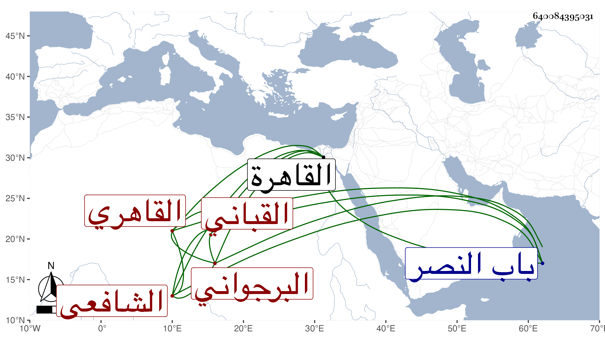

0902Sakhawi.DawLamic.ITO20230111-ara1.EIS1600.640084395031
Biography ID: 640084395031
621
قاسم بن عبد الرحمن بن محمد بن علي بن أحمد الزين أبو محمد بن الشرف ابن النجم بن النور القاهري البرجواني الشافعي القباني أخو محمد الآتي ويعرف كسلفه بابن الكويك . ولد كما أخبرني به في خامس ذي الحجة سنة ست وثمانين وسبعمائة وقيل غير ذلك بالقاهرة ونشأ بها فحفظ القرآن ثم العمدة والمنهاج وعرضهما على جماعة ، وحضر بعض الدروس وسمع على التنوخي وابن أبي المجد والعراقي والهيثمي والعماد أحمد بن عيسى بن موسى الكركي سمع عليه خاتم الشفا والشهاب الجوهري وقريبه الشرف بن الكويك والشمس المنصفي وآخرون وحدث سمع منه الفضلاء أخذت عنه أشياء ، وكان خيرا ساكنا صبورا على الطلبة متكسبا بالوزن بالقبان وكذا بالخياطة أحيانا بل هو من صوفية سعيد السعداء وقراء الصوفية بها . مات في شعبان سنة اثنتين وسبعين ودفن بتربة ابن جماعة ظاهر باب النصر رحمه الله .
